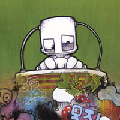
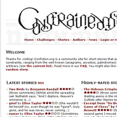

The Heist of the Art
This page contains links to supporting documentation for Daniel Winterstein's Heist of the Art project. Since the project is driven by action and narrative, and I am a writer, this documentation is mostly textual rather than visual.
Writing
I have written a number of plays, short stories and newspaper articles. Here are some examples of my work:
JOHN: It's a tough business. Not everyone can take it.
BENWAY: This is true. Especially with this kind of money at stake.
JOHN: I can feel it pushing down on me now.
BENWAY: Can you take the pressure?
JOHN: Does the pope shit in the woods?
— Show me the Money (first performed at The Traverse, Edinburgh)
"superb... great characterisation, sparkling dialogue and solid structure" — Edinburgh Evening News
Things to remember: Except for going to bed, everything you do after 3am will be wrong.
— Keep Smiling (published in New Moon Magazine)
Perhaps it was all the drugs he'd taken as a student, but at the age of 34, Max Lipowicz's liver became conscious. Like all sentient beings, it desired companionship. Unfortunately its attempts to communicate were variously misinterpreted by Max as hangovers, indigestion and an allergic reaction to shrimp. In frustration, the liver developed telepathy. "Hello," Max thought, "I'm hearing voices." and wondered if this was due to all the drugs he'd taken as a student.
"Just one voice." his liver corrected, and explained who it was. Max, of course, headed straight for the nearest doctor.
— Mr Lipowicz's Liver (published in Ape Magazine)
More...
More of my writing can be found on my website.
Team
The team for Heist of the Art is a group of talented individuals with portfolios of their own. Here is a brief summary.Ken Nicholson
Ken is a writer and director working with Edinburgh-based theatre groups The Luvvies, Creative Space and his own company Townhill & Nicholson. He has produced & directed 10 plays in the last three years and also 3 short films. Most recently, the satirical musical F*You (2008) which he also co-wrote, Painted Eggs (2008), The Torchsong Trilogy (2007), and Pinter's The Dumb Waiter (2007). He is currently working on a low budget feature film.Joe Halliwell
Joe is an experienced web-designer and runs a community site for constrained literature. He has maintained his keen interest in the artistic potential of new technology through contact with local groups such as Dorkbot and the Chateau Institute of Technology.
Ilana Winterstein
Ilana is a theatre practitioner with a Masters in Performing from Central School of Speech and Drama, as well as a BA degree in English Literature from Birmingham University. She also writes for the theatre, and is a member of the Soho Theatre Young Writers Group.
There was a village, a little bit like this one. In fact not so much like this one, because here it is big and smelly and full of too many people and noise and cars and animals and buildings and trains and pushing and buses and shoving and queueing and shopping and bustling and tooting and running and... in fact some people would say that this here is not a village at all. And here it seems that there is not enough time to just sit and watch a feather fall from the sky. Simple and soft, on the breath of the wind. And how sad it makes me that here people do not spend the time they have on finding the holes made by rainbows or catching falling stars in nets at night or bottling birdsong to bake into cakes.
— The Cloak of a Story
Tom Lewis
Tom is a premium degree pencil wizard, and mouse master of the first order. Born in Birmingham in 1979, he is at present working as an artist and illustrator in Warwick.
Sample work
Some samples of the team's work can be viewed below:
 